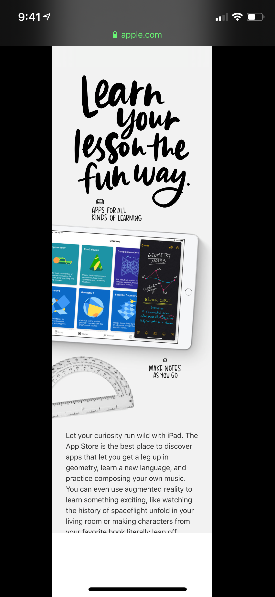
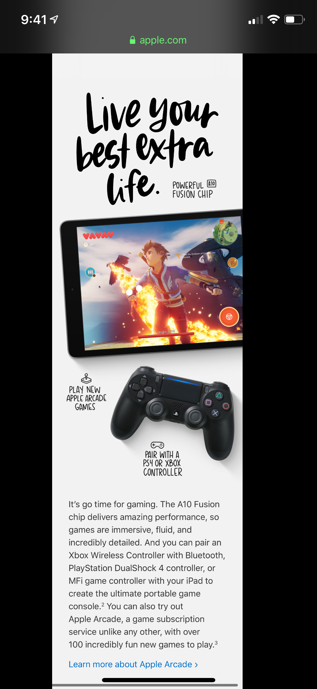
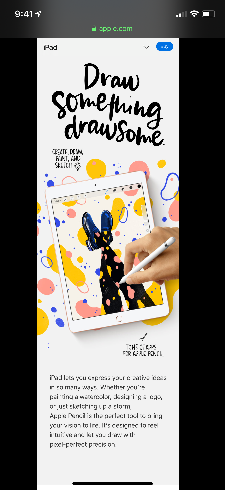
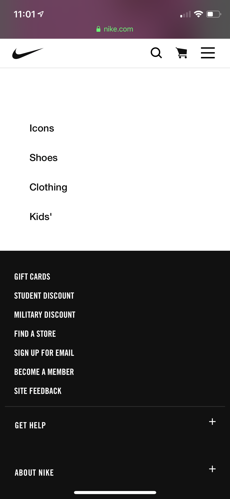

Assignment 2 - Design Principles
Repetition
Apple - Link
  Here are three screenshots of an example of repetition used on the Apple website. While showing the new features of the new iPad Apple has decided to use a repetition of title, image, then paragraph. I have posted three examples of the repetition but if you follow the link you will see that they do this more than three times.
White Space
Google - Link
Here is a screenshot of a Google search from Google's mobile site. As you can see, there is a lot of the color white. Whoever designed this website has elected to use the color white for the background and that has created a lot of white space on the page. Wherever there is no text on the page it creates a space for the reader to rest there eyes. Google does a great job of creating white space on mobile browsers as well as desktop ones.
Contrast
Nike - Link
Here is a great example of the use of contrast on a website. On Nike.com you can always expect to see a lot of contrast with text and background as well with images they have. In this particular example, towards the bottom of the homepage of Nike's mobile site we can see the change from a white background with black text to a black background with white text. They did a really good job of maintaining the balance on the page while at the same time showing some contrast.